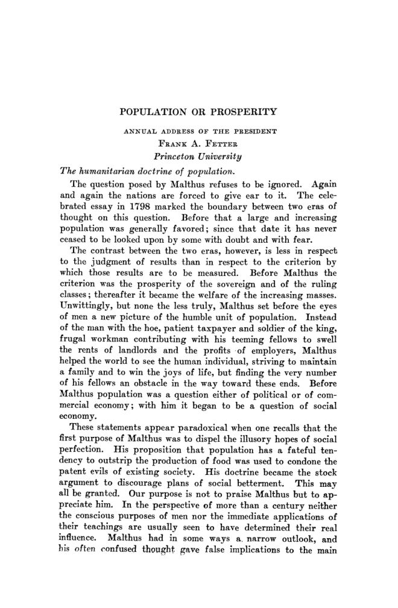

Fetter, 1912: quando mais habitantes deixam de significar mais renda
Leitura: 8 min
No discurso presidencial de 1912, Fetter sustenta que os Estados Unidos haviam passado do ponto de rendimentos decrescentes e que o crescimento da população anulava, para a massa, os ganhos do progresso técnico.


Os volumes do censo americano traziam uma série de mapas sombreados, um por década desde 1790, mostrando a área ocupada e sua densidade. Frank A. Fetter, de Princeton, abre a parte central de seu discurso presidencial de 1912 com esses mapas. Por cem anos, a fronteira avançou década após década. Por volta de 1890, o processo parou ou mudou de natureza: o mapa de 1900 quase não difere do anterior.
O discurso, lido em Boston diante das associações de economia e de ciência política, é uma releitura de Malthus para a economia americana. Fetter não pretende louvar Malthus, mas entendê-lo: o mérito do ensaio de 1798, diz, foi trocar o critério da questão. Antes, a população era julgada pela prosperidade do soberano e das classes dirigentes; depois, pelo bem-estar da massa que cresce.
Qual é, para Fetter, o problema da população?
A definição é econômica. O problema consiste em determinar a melhor proporção entre o número de habitantes e a área e os recursos de um país, julgada pelo bem-estar duradouro da grande massa do povo. Não se trata, portanto, de ser a favor ou contra o crescimento em si, mas de saber se o país está aquém ou além do ponto em que mais gente aumenta a renda de cada um.
Fetter lembra que a doutrina inglesa perdeu interesse prático no meio do século XIX. Depois da revogação das leis do trigo em 1846, com a melhoria dos transportes e a abertura de terras virgens, salários reais e bem-estar avançaram por meio século na Europa ocidental e nos Estados Unidos. Nesse ambiente, qualquer versão de Malthus parecia falsa ou inútil.
Nos Estados Unidos, a opinião sempre foi hostil a Malthus. Uma população crescente convinha a proprietários de terra, empresários, regiões rivais e ao governo nacional, e a densidade era vista como causa de divisão do trabalho e de economias na manufatura. Fetter distingue duas versões desse otimismo: a de Henry George, que negava em princípio que a população pudesse crescer demais, e a de Henry Carey, para quem isso não aconteceria nos Estados Unidos.
O que mudou por volta de 1890?
O fim da fronteira de terras férteis prontas para uso revelou o caráter das grandes áreas em branco dos mapas: em boa parte, desertos. O aumento da população passou a depender do cultivo mais intensivo das áreas já ocupadas. Os números do censo mostram a mudança. Na década até 1900, a população cresceu 13 milhões, dos quais 8 milhões nas cidades; na seguinte, 16 milhões, com 12 milhões urbanos e só 4 milhões rurais.
Os preços seguiram. O ano de 1896 marcou os preços mais baixos em décadas para alimentos e produtos agrícolas, e 1898 o máximo de exportação de alimentos dos Estados Unidos. Desde então, os alimentos subiam mais depressa que os preços em geral, e as exportações caíam. Num período de progresso técnico notável, que pela teoria aceita deveria elevar salários reais, estes subiram pouco ou até caíram.
“Passamos do ponto de rendimentos decrescentes na relação entre nossa população e nossos recursos.” (“we have passed the point of diminishing returns in the relation of our population to our resources.”)
Fetter admite uma explicação parcial: quando os preços sobem, os salários acompanham com atraso. Mas atribui a maior parte do fenômeno aos rendimentos decrescentes. O crescimento da população, conclui, estava neutralizando para a massa os ganhos do progresso técnico.
Conservação e técnica bastariam?
Fetter contesta as estimativas de que o país poderia sustentar 400 milhões de habitantes, ou mesmo um bilhão se chegasse à densidade da Itália. A questão, diz, não é se seria possível, mas a que custo para o bem-estar. Forçar a produção numa área dada exige cultivo mais intensivo, com mais trabalho manual ou mais capital. A volta ao campo também não resolve: a cada par de braços acrescentado à agricultura, somam-se três bocas na cidade à espera dos produtos.
Sobre as máquinas, o argumento é de preço relativo. As invenções são patenteadas e vendidas em todo o mundo; se outros países as usam menos, é porque o trabalho manual é mais barato nas suas condições. O nível de mecanização é fixado sobretudo pela relação entre população e recursos.
A conservação recebe seu apoio, com limites. Quanto aos minérios, só adia o esgotamento: no ritmo de consumo de então, o minério de ferro acabaria em trinta anos, o petróleo em noventa e o carvão em cento e cinquenta. A drenagem e a irrigação poderiam somar cerca de 15% à área de fazendas e, no máximo, 40% à produção de alimentos, o que mal cobriria duas décadas de crescimento da população no ritmo de então.
Que instrumento de política restava?
Fetter observa que, na década até 1910, o país tinha mais de três milhões de nascidos no exterior a mais do que dez anos antes, e que um quinto do crescimento da população era de imigrantes. Dos fatores de crescimento, diz, o único controlável em larga medida por lei é a imigração. Ele trata o tema pelo efeito econômico: um fluxo contínuo de trabalhadores vindos de países com salários mais baixos aumenta a oferta de trabalho e pressiona os salários.
O argumento usa a linguagem da oferta e da demanda. Diz-se, observa Fetter, que sem imigração a oferta de trabalho não bastaria à demanda; não bastaria, responde, aos salários de então, porque oferta e demanda se referem a um preço. A um salário maior, quantidade oferecida e quantidade demandada voltariam a se igualar, com lucros temporariamente menores. Ele rejeita também a teoria da quantidade fixa de trabalho, segundo a qual cada novo trabalhador toma o lugar de outro; o efeito que aponta é outro, o rebaixamento gradual e permanente do nível geral dos salários pelo aumento contínuo do número de trabalhadores.
Qual é o ideal proposto?
Fetter recorre a John Stuart Mill e ao estado estacionário, termo que considera pouco feliz: Mill não falava de uma sociedade parada nas artes e na cultura, mas de uma população estável depois de atingida a densidade que permitisse o maior bem-estar geral. Contra a versão crua do evolucionismo, que exigiria a pressão da necessidade física para manter um povo laborioso, propõe que o estímulo ao progresso venha das aspirações crescentes em relação à renda, e não da fome.
“Queremos rivalizar com outros países mais em população do que em prosperidade?” (“Would we rival other lands rather in population than in prosperity?”)
Na minha leitura
Na minha leitura, o discurso de Fetter é um exercício de economia da escala ótima aplicado a um país inteiro. A definição do problema, uma proporção ótima entre habitantes e recursos medida pelo bem-estar da maioria, é a parte mais durável. O teste empírico que ele propõe é o certo para a pergunta: se o progresso técnico não se converte em salários reais, alguma força contrária está operando.
A fragilidade está em identificar essa força com segurança. Fetter reconhece que salários atrasam em períodos de alta de preços, mas atribui a maior parte do efeito aos rendimentos decrescentes sem separar as duas causas, e suas projeções de esgotamento de minérios supõem o ritmo de consumo e a técnica do momento. O método é o de Malthus; o ponto em discussão é se a curva de rendimentos estava mesmo inclinada como ele supunha.
Glossário
- Rendimentos decrescentes
- queda do produto adicional obtido quando se acrescenta trabalho ou capital a uma quantidade fixa de terra.
- Fronteira
- limite da área ocupada por povoamento e agricultura no avanço para o Oeste.
- Estado estacionário
- em Mill, sociedade com população e capital estáveis, mas com progresso nas artes e na cultura.
- Teoria da quantidade fixa de trabalho
- ideia de que há um volume fixo de empregos, de modo que cada novo trabalhador desloca outro.
- Salário real
- salário medido pelo que compra, isto é, descontada a variação dos preços.
Fontes
- Population or Prosperity: Annual Address of the President — Frank A. Fetter (Princeton University) (pp. 5–19). JSTOR · Internet Archive (PDF)
- Edição completa, com os demais artigos: Nº 123 do Arquivo.
Documento em domínio público (EUA, publicado antes de 1931), via JSTOR Early Journal Content e Internet Archive. Resumo e comentário do autor deste site, sem afiliação com a American Economic Association. Encontrou um erro? Escreva: a correção é publicada no próprio texto, com data.
↑ Nº 123 · Boston, 1912: população, dólar padronizado e os limites da regulação Fisher, 1912: um dólar de poder de compra fixo e peso variável →